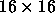

This algorithm was developed in the course of a masters thesis without knowledge of the original LVQ learning rules ([KKLT92]). Only later we found out that we had developed a new LVQ algorithm: It starts with the smallest possible number of hidden layers and adds new hidden units only when needed. Since the algorithm generates the hidden layer dynamically during the learning phase, it was called dynamic LVQ (DLVQ).
It is obvious that the algorithm works only if the patterns belonging to the same class have some similarities. Therefore the algorithm best fits classification problems such as recognition of patterns, digits, and so on. This algorithm succeeded in learning 10000 digits with a resolution of

pixels. Overall the algorithm generated 49 hidden units during learning.